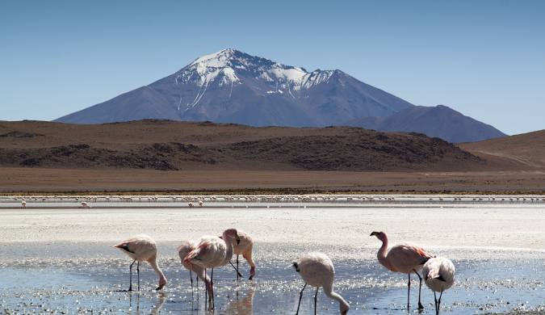

Hello! My name is Adán Tudela, I'm 26 years old, and I'm from Cochabamba, Bolivia. I love learning and thrive on mental and logic games, which challenge my problem-solving skills. Soccer is my favorite sport, and listening to music is my best hobby; both provide a great balance to my life.
Programming is my passion, and I'm currently finishing my studies to become a software developer. As a systems engineer, I value attention to detail, collaboration, and continuous learning. I'm dedicated, proactive, and always looking for ways to improve. My goal is to create innovative and efficient solutions to real-world problems and make a meaningful impact in the tech industry.
Bolivia My Country
Bolivia is a country in central South America, with varied terrain from the Andes,
the Atacama Desert and the rainforest in the Amazon Basin.
At more than 3,500 m high, its administrative capital, La Paz, is located in the Altiplano of the
Andes
with the snow-capped Mount Illimani in the background.